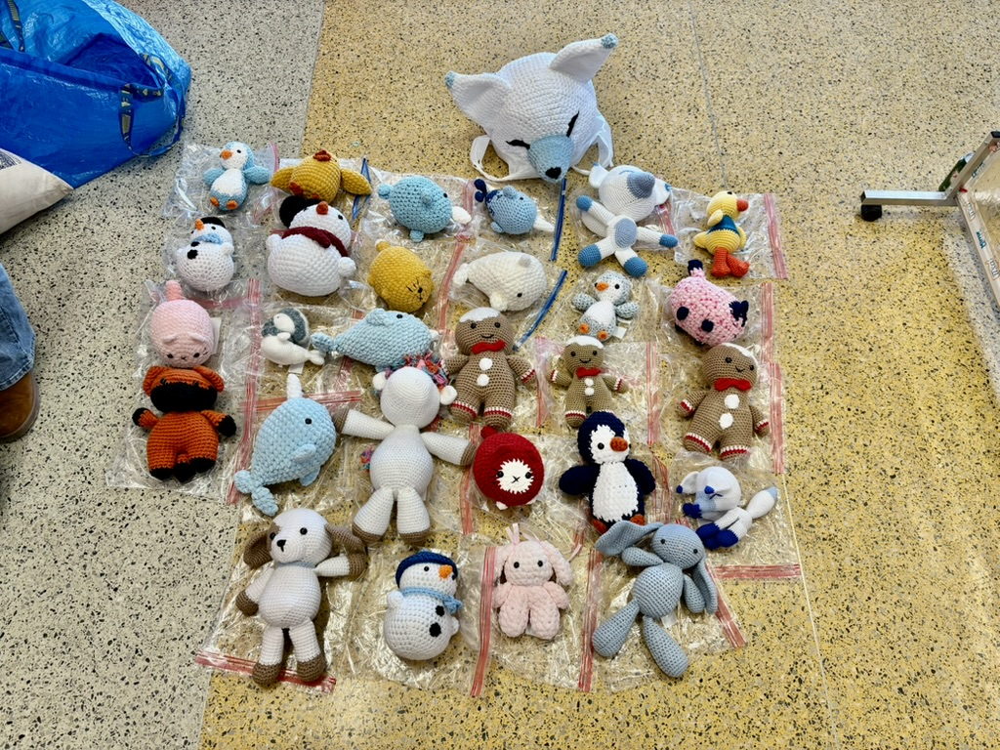
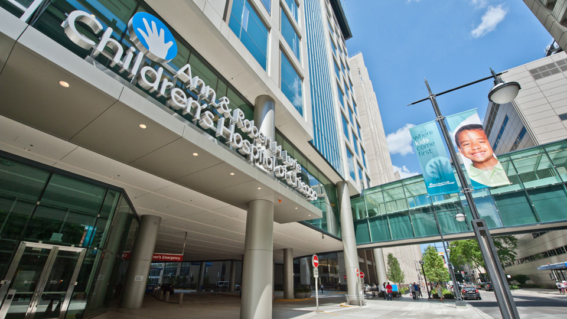

From Hooks to Hope is a student-founded nonprofit dedicated to creating handmade plush items for pediatric patients. By designing and crocheting each item entirely by hand, we partner with hospitals to provide comfort and emotional support to children during hospital stays while connecting crocheters with communities in need.
Members
Plushies Donated
Hospital Partner


